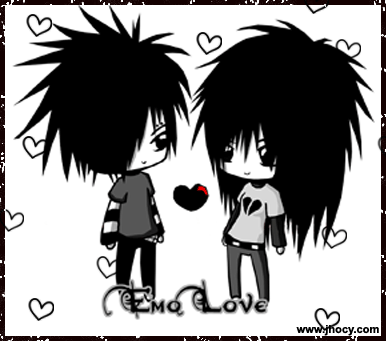
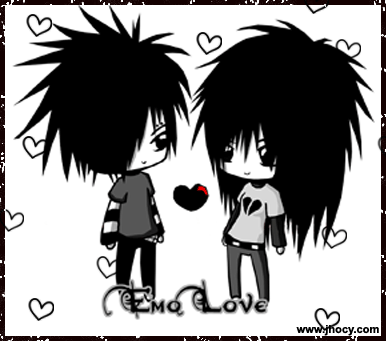
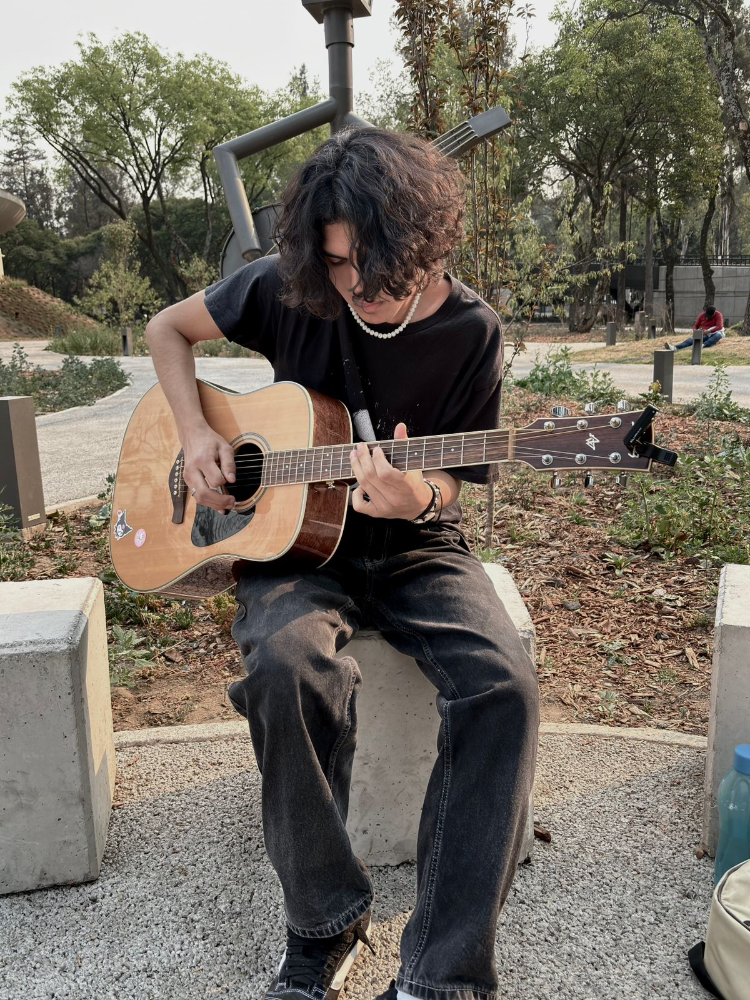
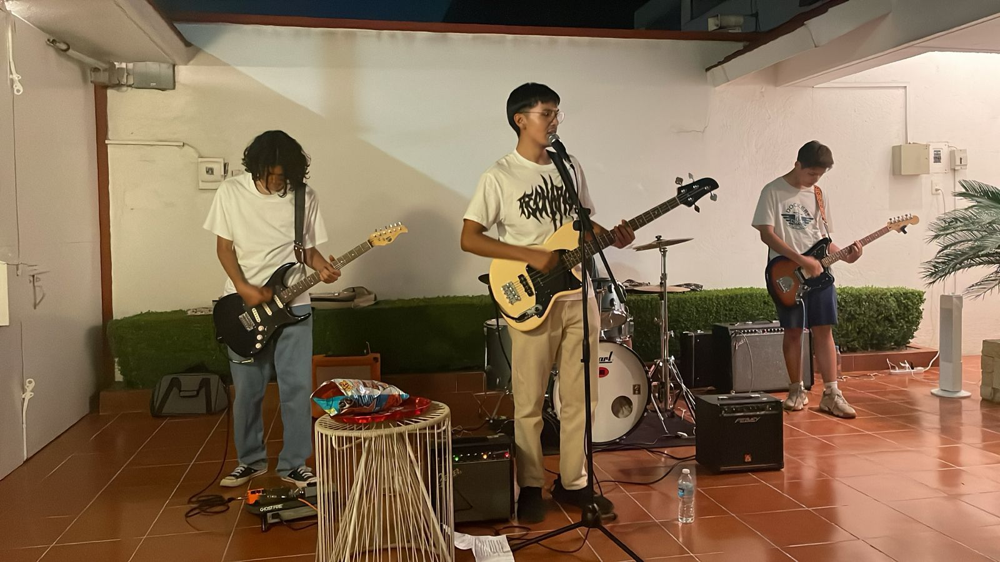
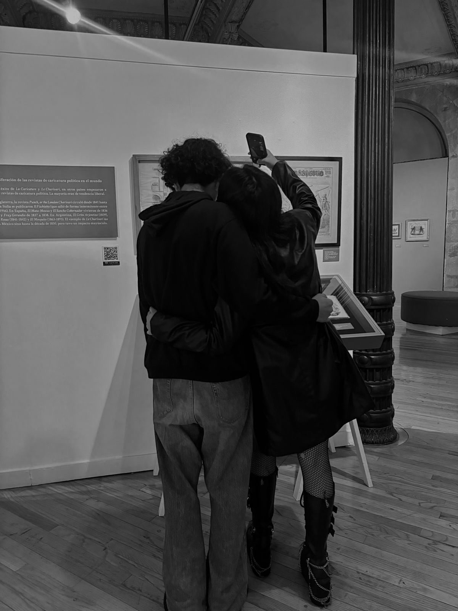
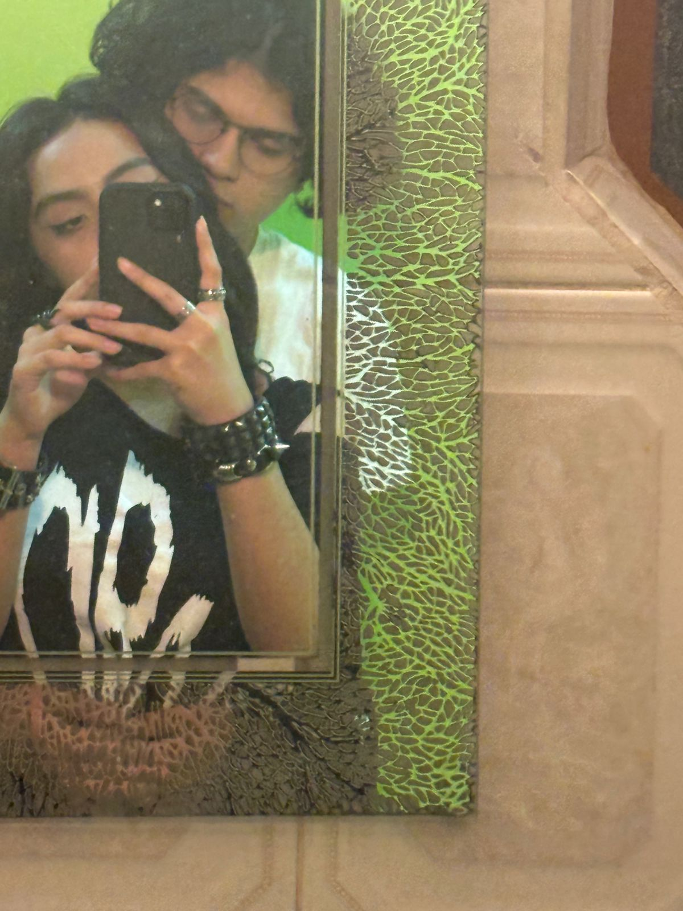
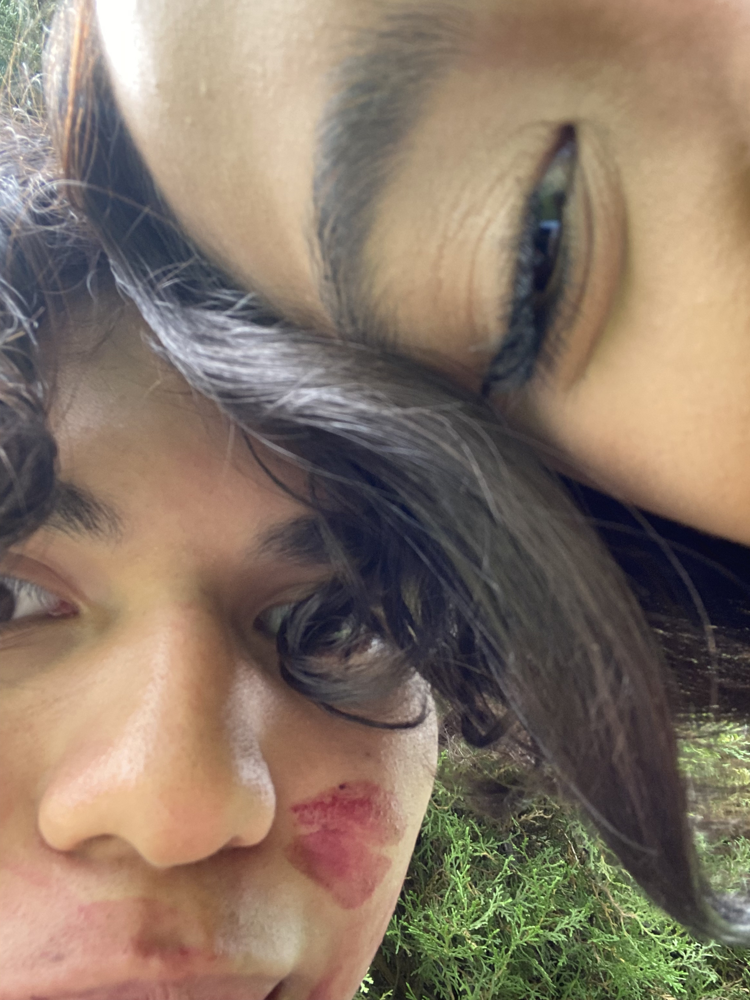
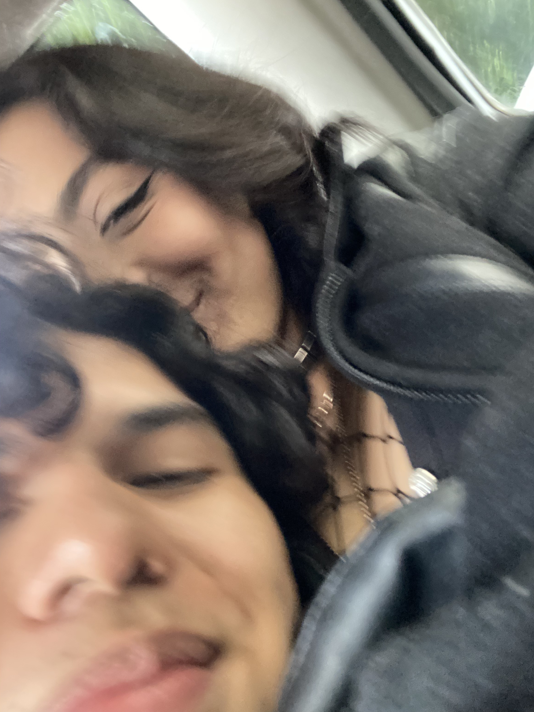
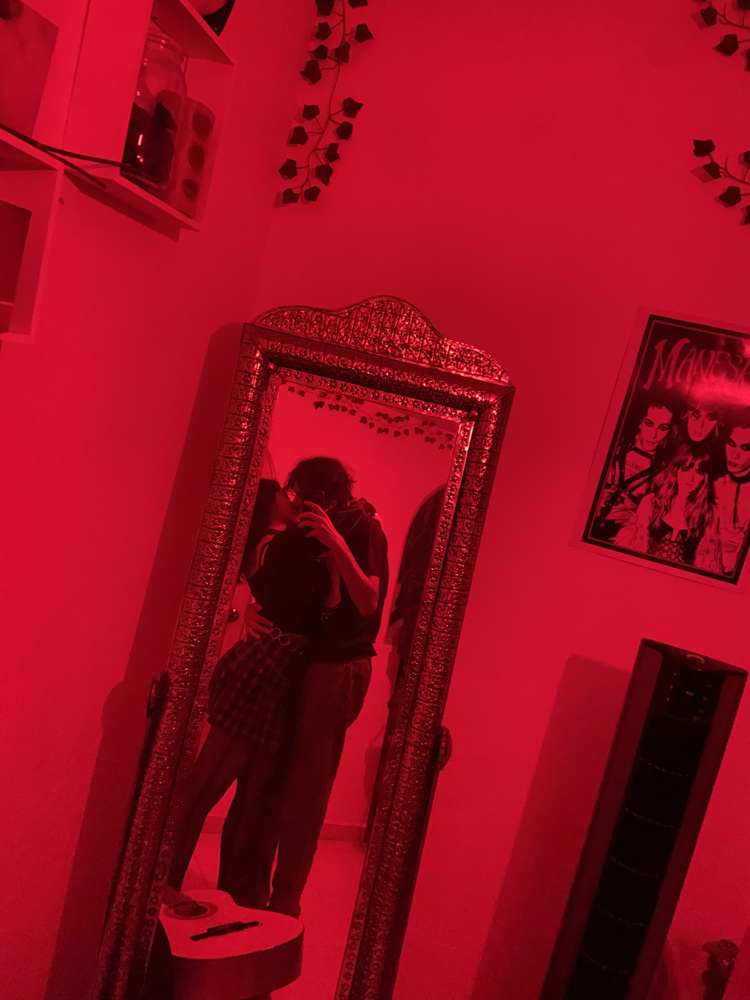
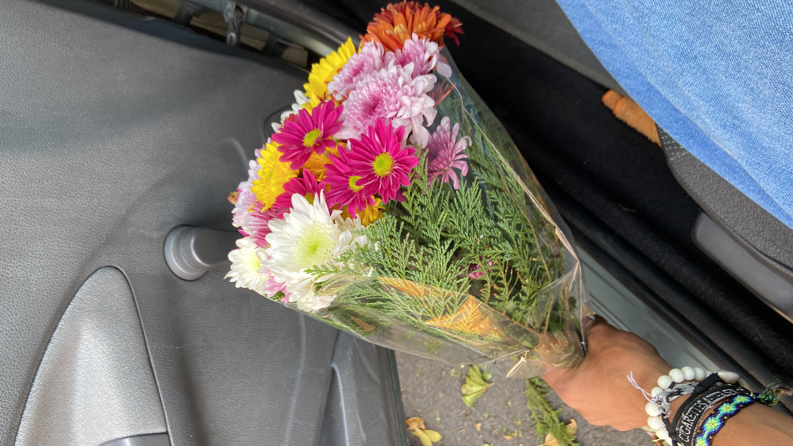

Hola amor mio te hice esta página web para nuestro aniversario, quería que fuera algo especial y pues sobre todo lindo y único, espero que te guste mucho y que se la presumas a todo el mundo JAJJAJA, Te amo demasiado.
Este año que he estado contigo he experimentado y vivi do varios momentos importantes de mi vida, me alegra demasiado que tu seas esa persona que este ahí para salvaguardarme, protegerme, cuidarme, aconsejarme y ser mi compañera de vida, de verdad no se como agradecerte on tantos momentos especiales que hemos tenido a lo largo de este año.
Algunos momentos han sido bastantes feos y tormentosos hasta cierto punto para la relación, pero, de algo estoy seguro es que quiero que sigas siendo esa persona que esté ahi para mi y esté conmigo en todo momento. Tdos tenemos errores, tu, yo y el resto del mundo, aprendemos de las experiencias, practicando y siendo resilientes en todo, estoy muy orgulloso de decirte que he aprendido mucho contigo, cosas de la vida, que amar a alguien conlleva mucha responsabilidad y trabajo, respeto y un sin fin de cosas más, pero solo tengo que decirte, gracias por todo.


En la primera estamos tú y yo, tenía muy poco que habían llegado Ali y Chingu a la casa. estaban muy pequeñitos.

En la segunda, fue el día que tocaste en la escuela. fue tu primera tocada oficial con cien días vivos. yo no pude estar ahí, pero estuvo muy padre, tocaron increíble !!.

En la tercera foto fue un día casual. estuvimos en tu casa tranquilos, y como acostumbras, estabas practicando un poco mientras yo te tomaba fotitos.
En la cuarta foto, fue la primera vez que tocaste en público enfrente de mí. estábamos en el parque que está cerca de metro auditorio. tomamos muchas fotitos, y fue muy agradable.
En la quinta foto, estabas ensayando con cien días vivos para el toquin en la casa de Re. yo no estaba ahí, pero tu mamá me mandó esa foto de cuando estaban ensayando.
En la sexta foto estábamos en un museo del centro. no recuerdo el nombre, pero fue un día muy lindo. estábamos con Cass y Gio. ese día estuvimos caminando bastante y también hicimos sellos en ese mismo museo jejej.

En la séptima foto estábamos en una cafetería. fuimos ahí para celebrar el cumpleaños de Frida, junto con Cass. estuvo muy lindo ese día, nos reímos mucho e igual tomamos muchas fotitos.

En la octava fue otro día casual en tu casa, pero decidí llevar mi cámara y te hice una mini sesión de fotos
En la novena foto estábamos en tu casa, estábamos a punto de venir a la mía, era un domingo en la noche, y antes de irnos quise tomarnos una fotito.

En la última foto, que fue de este mes, estábamos en mi casa. la tomé mientras estábamos viendo Death Note jeje.

Cuando te mandé mensaje por primera vez estaba con curiosidad de que vaya a pasar, aunq de verdad luego pensaba que me ibas a dejar en seen o de plano no ibas a contestar, si contestaste DJAJAJAJAJ.
La primera vez que fuimos al bicentenario fué un momento muy especial porque en ese momento tenía la emoción de volver a conocer a alguien nuevo, ver y experimentar eso enn ese precciso momento de verdad fué mágico, muy mágico para mi.
Esa vez que fuimos a Clavería era la segunda vez que salíamos, me pasé de verga por agarrar un taxi a 130 pesos a clavería pero como apenas empecé a manejar a mi mamá le daba miedo, pero fué muy lindo ir a comer hamburguesas a ese lugar, comí rico jejeje.

Me gustaba mucho irte a ver a escondidas a tu casa y estar menos de 20 minutos, con la preocupación del regaño que me daría mi mami (nunca se enteró).


Cuando me escribiste estos parrafos sentí muy lindo, de verdad estuvo pensando mucho en eso que me escribiste y fué y seguirá siendo algo muy especial que recuerdo hasta la fecha.
Ese día fué todo muy wow, sentía los nervios de pedirte ser mi novia, sentía mucha emoción y euforia por ese moento, aquí fué donde empezó esta gran aventura conigo.

Día de muertos jamás lo había pasado con alguine, fué muy especial disfrazarme y estar a tu lado experimentando como es estar en una relación HERMOSA Y PREICIOSA.
Otra de las cosas que hago mucho es darte flores cuando tengo dinero, es algo especial porq me pongo a pensar que tenngo a alguien para darle flores y ese alguien eres tu.

Uno de los mejores regalos que me han dado, en ese tiempo me sentía como niño chiquito diciendote couanto me gustaba Minecraft como ha cambiado mi vida y cosas así, es kk de vdd es un juego que he tenido muy arraigado desde chiquito, por eso tanto amor que le tengo a este regalo y a la abejita.

Cuando fuimos a perro fué la primera vez que le dije a mi mamá que iba a un bar (AUNQUE EN REALIDAD FUÉ COMO UN TIPO ANTRO HEEE) fué muy impresionante como estuvo todo. La verdad me la pasé muy bien estanndo ahi contigo en todos momentos, eso si, te andaba cuidando de cualquier naco JAJAJAJ.
Ese día estuvo muy lindo, fuimos a dar una vuelta en un parque nuevo cerca de el museo de antropología, estuvo muy tranquilo todo y esos momentos contigo son los que me da mucha paz. Era la primera vez que tocaba en la calle (Independientemente si a personas de manera casual o algo así), pero se me quitó mucho la pena de estanndo ahi contigo, muy tranqila esa salida.
Ese día fué muy agridulce en su mayoría pero, lo que más valoro de ese día es que juntos podemo shacer que las situaciones adversas, que juntos podemos con cualquier problema, enojo, mal entendido, etc.
Ya como es costumbre vienes a mi casita y estamos flojeando viendo la tele y cosas achi, pero decidiste tomarme una session de fotos, estuvo muy cool y chistosas algunas fotos que tomaste. Me gusta flojera contigo cada que vienes a mi casa.

Ese día me la pasé muy bien estando contigo, yendo al centro, viendo guitarras y cosas de música, la verdad me gusta mucho estarte hablando de audio y tmb de código ahorita que ya me empecé a meter más en esto. Mi momento favorito fué cuando el señor se sorprendió que gasté más de 13k en 10 minutos JJAJJAJAJAJ.
Finalemente, la actualidad.
Actualmente me siento muy agradecido de tenerte en mi vida, de este año lleno de locuras, risas, tristezas, enojos, lamentos, daño que nos hemos hecho, etc. Agradezco todos los momentos hermosos que he estado contigo, aprecio todas las peleas contigo, ya que, siempre quiero evolucionar como ser humano y cada vez ser mejor persona, para ti y para mi. Jimena, amo absolutamente todo de ti, todo tu ser lo amo con mi alma.
Gracias por estar conmigo